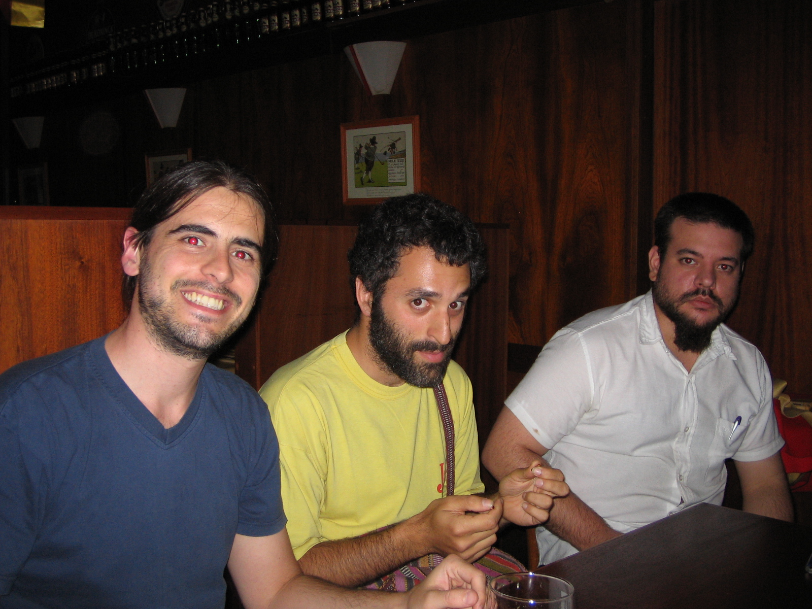
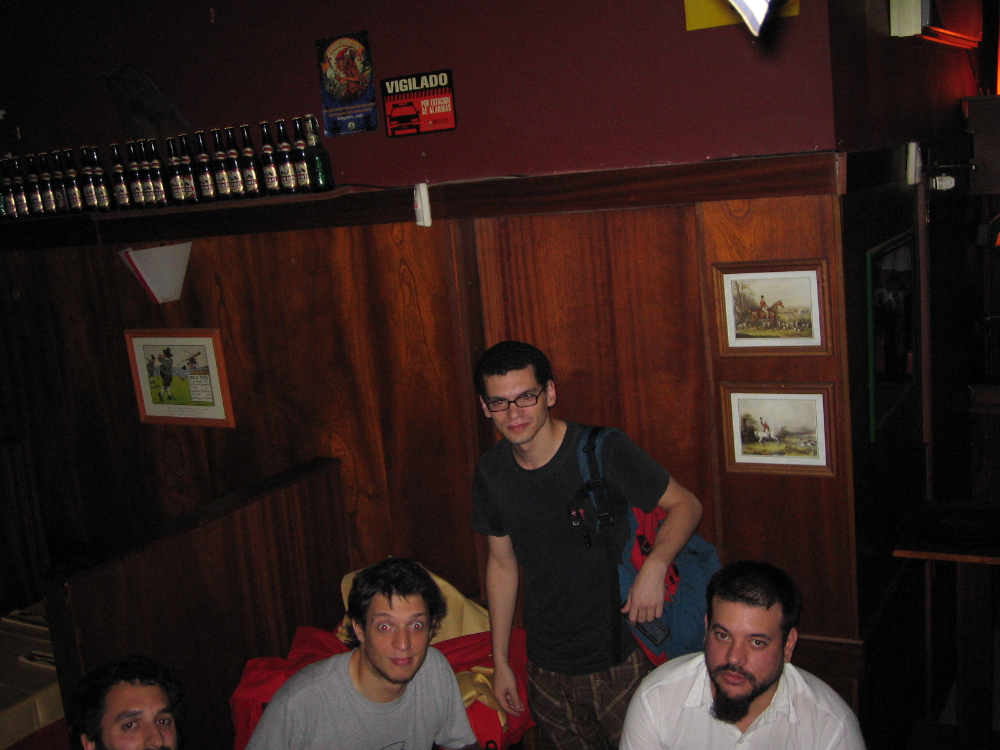
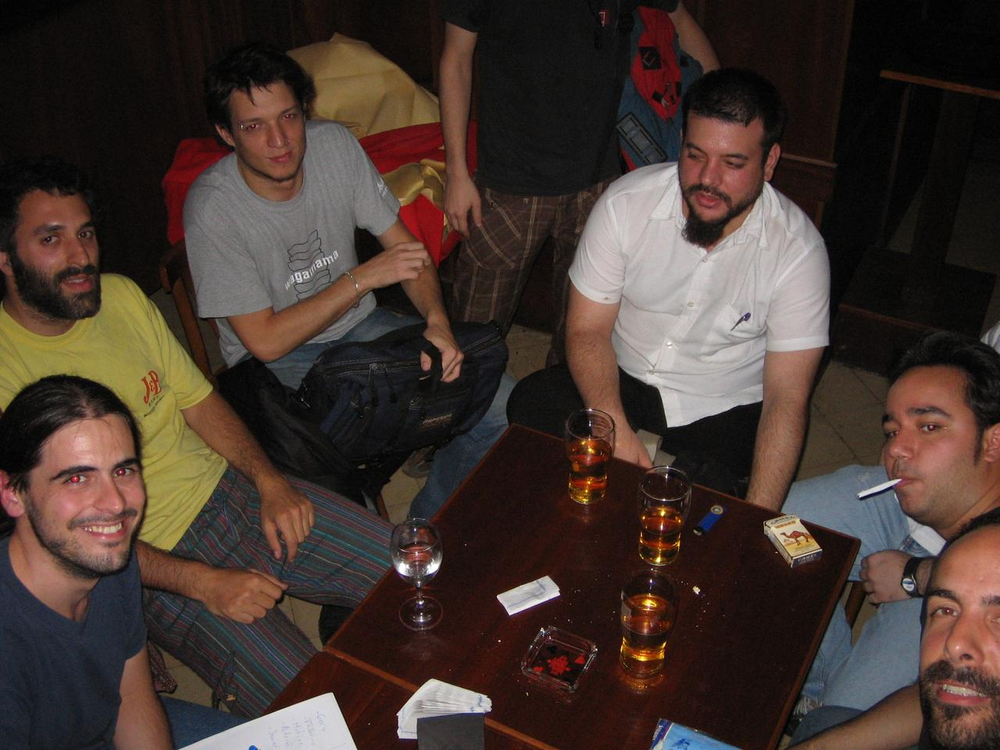
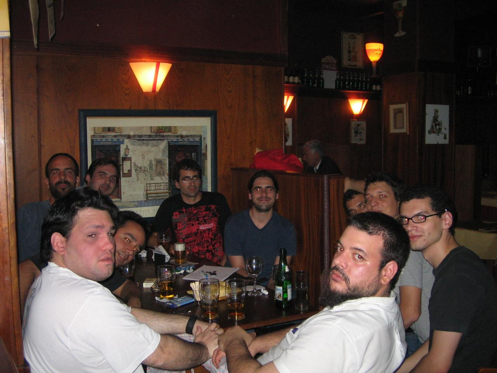

Lamentablemente me estoy poniendo a escribir esto tres semanas después de que sucedió, pero créanme: no tuve tiempo antes.
La séptima reunión de PyAr fue un completo éxito. Aparte de los mismos sospechosos de siempre (David, Lucio, Pablo, Leonardo, Mariano y el que subscribe), hubieron muchas caras (¡y cerebros!) nuevos: Gera, Federico, Matías, Adrián y Javier.
De distintos backgrounds, había gente que provenía de LUGAr (aunque prefieren trabajar en BSD y lo que más me sorprendió: gente que escribe assembler para vivir!!
La charla Python se basó principalmente en Zope, aunque hablamos de muchos temitas más. Luego discutimos el tema de las remeras, y surgió un local que nos las podía hacer rápido (al otro día fuimos Lucio, Mariano y yo, hablamos con esta gente, luego nos internamos cuatro horas en la casa de Pablo (con él, por supuesto) hasta que sacamos un logo que cumpliera con las limitaciones de esta casa, lo mandamos, y nunca más supimos nada).
También discutimos un poquito sobre la dirección web que queríamos encontrar para PyAr. Surgió una interesante, pero nos obligaba a registrarla en Paraguay (era argentina.py). Igualmente luego en la conferencia lo hablé y nos dieron el nuevo enlace (¡muy bien!).
El lugar, el mismo de siempre, se portó bien y mal. Bien porque una vez más nos regalaron una vuelta de choripanes, y mal porque esta vez realmente nos quedó chico (¡eramos once!).
